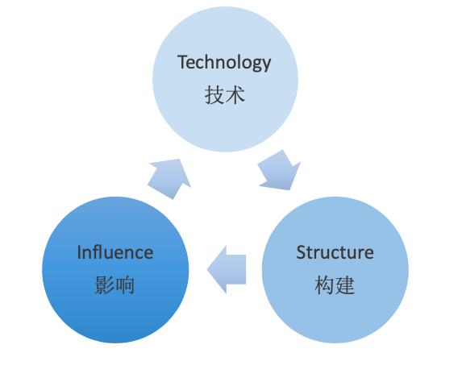

概述
- 本文旨在阐述业务 SRE 在平时工作中，做的更加职业化的一些感悟和总结.下文中业务运维等同于业务 SRE.
一 业务运维的职业标准
(一) 梳理工作，使得每个运维任务都有流程，流程化做事情
其中就涉及到做标准化,标准化是自动化的前提,有些运维任务可能暂时没有自动化,但是 SRE 一定要把他先梳理成流程,总结各个任务的标准输入和标准输出,形成流程文档.并努力做到以运维平台 API 形式体现.
(二) 自动化一切
做自动化的重要性相信大家都明白，这里主要是想说一下对 SRE 做自动化的一些感悟.
1 注重可视化:
-
使运维流程变得自动化，同时注重自动化当中的可视化 。
-
流程一共要做几步，每一步都做什么，明确的提示。
-
如果失败，则告知原因、报错信息，使用户一眼明白流程为什么失败。
-
大到流程系统中的每一个流程，小到 tomcat 启动过程甚至一个 shell 脚本的执行。
2 明白运维自动化平台的核心是 3 大能力：
配置管理能力、变更管理能力、状态管理能力
（三）做任何重大变更之前一定要双重确认
- 做任何重大改动前一定要 double check
- 具体体现在有组内互相 review 机制和具体 review 记录文档
（四）任何重大线上改动 一定要遵守灰度发布原则
（五） 有变动及时告知业务方
二 业务运维和同事（上游和下游）的沟通标准
-
任何时候都不能有情绪化的表达方式
-
任何变更提前告知
三 线上各种操作要善用检查技能
1 重点:
-
项目上线之前，有一个 checklist,上线之前必须一一检查
-
项目研发期间，和各个底层支持部门的一些待解决问题进行罗列，并定期检查
四 平时应该主动提高的技术工程能力
包括但不限于以下这些
| 技术领域 | 要求 | 备注 |
|---|---|---|
| Linux kernel | 深入理解 kernel,包括掌握 CPU 调度、Mem 子系统、Net 子系统、IO 子系统的细节,擅长故障排查,利用 Perf 工具进行性能分析和优化 | |
| 程序: python/shell | 精通 | |
| 程序: c/js/html/css | 使用层面无问题 | |
| 利用 Web 框架进行运维工具开发: flask 生态、 react 生态 | 熟练开发 | 不仅限于 flask 和 react,也可以 Django、Tornado、Vue |
| 数据库: MySQL、MongoDB、Redis | 使用层面无问题 | |
| 容器化: Docker、Kubernetes | 使用层面无问题 | |
| 网络服务: nginx、etcd、bind、kafka、haproxy、 等等 | 可随心所欲搭建,即使以前没接触过,能够照着教程、官网进行维护 | |
| 开源运维工具使用：supervisor、 puppet、ansible、zabbix 等 | 熟练使用 | |
| 网络协议: TCP/IP 协议族、http/https、路由交换、子网划分 | 深入理解其原理,拥有扎实的基础知识 |
五 运维工作指导性原则的汇总
- 一切运维工具要给用户这样的体验: 简单、靠谱
- 做运维系统时注重标准化和可视化
- 团队合并时可以参考这样一个原则: 数据和技能共享，运营独立
- 做系统功能的时候，对后端(你依赖的系统)宕机的情况，提供重试机制，并且重试的时候去除第一次失败的主机.
- 运维碰到的任务，就是不断的进行抽象，把一层一层的工作剥离，厘清，然后分别去实现每一层。每一层都有自己的 owner 和相应的用户
- 运维同学需要时刻熟悉当前业务架构下，各类层面可用的开源软件以及技能，例如以下是一个梳理:
- 安全类： iptables、ipset 、各种开源软件的限制技（比如 rsync 里面的 hosts allow ,nginx 里面的 allow,deny）
- 稳定类： supervisor\各种重试机制 + 各种监控技能
- 高效： flask 开发、python 开发、批量操作工具（cssh，pssh） 配置管理工具（puppet、ansbile）
- 低成本: 合理利用各种资源，包括 ip 资源、端口资源等等
- 总结是进步的阶梯，分享是快乐的源泉。运维工作中，应该常常总结，多多分享
六 业务运维找事情做的各个方面汇总
1 平时日常
- 梳理当前处于临界状态的设备、软件、系统（统称运维风险点），并进行改善
- 不断完善自己团队的技能闭环
- 把当前自己工作中做起来不方便的任务进行梳理，然后着手优化
2 大方向
- 聚焦产品根本需求，提供能够解决产品问题的服务器架构。
- 数据决策，通过数据来做架构优化的评估。
- 学习紧跟新技术方案，为产品提高稳定性、降低成本、提升效率。
- 总结运维经验，分享知识，推动公司产品进行架构升级或优化。
3 职业成长周期
-

-
技术+技术+技术==>产品+技术+运营
七 业务运维平时的意识
-
抓住核心: 核心流程 核心应用 ##业务部分太多，必须抓住核心应用
-
对线上变更、高危操作保持敬畏:
-
先测试后上线
-
做好备份
-
线上操作意识 #线上操作，一条命令敲下去达到什么效果。必须做到心中有数，而非敲下去试试看这样的心态
-
脚本化／自动化代替手工操作
-
谨慎 ##做人谨慎 ,提前预判可能会出现的问题。
-
细心 ##做事细心,复制粘贴命令需仔细检查.
-
变更完要马上验证
-
保持对线上运行状态的关注
-
不要”偷偷”变更
-
编写脚本\程序时,不轻易 hardcode
-
处理故障时,找上你的搭档一起
-
处理故障时,比业务方更“紧张”
-
做好 CMDB 联动，统一变更操作入口
-
保持一致操作，避免异构管理
-
临时需求更需要规范处理
- 针对故障处理的要求: 1 分钟发现问题，5 分钟定位问题，10 分钟恢复问题
八 总结一下 Google SRE 的指导思想
- 1 拥抱风险和管理风险
- 2 用好 SLI 和 SLO 工具, SRE 的工作围绕 SLO 展开.
- 3 减少琐事
-
- 工程工作通常是指有创新性和创造性的, 着重通过设计来解决问题, 解决方案越通用越好. 例如 软件工程、系统工程.
-
- 琐事: 与运维服务相关的重复性的、手工的劳动.
- 4 做好监控.
- 5 做好自动化
- 6 做好发布工程(变更管理)
- 7 简单化
九 SRE 工作着力点
1 融入业务团队
- 懂业务术语、"黑话"
- 懂业务目标
2 建立信任获得授权
- 团队之间建立信任, 最最根本的还是技术能力.
shut up, show me the code. - 除了技术能力之外, 很有必要加强自己的沟通、说服能力.
3 推动业务发展
- SRE 需要针对业务层的需求做更多的事情. SRE 团队在业务层越深入, 开发的工具可能就越完善和丰富. (比如原来一个业务需求需要完全 RD 团队从 0 到 1 开发,SRE 参与之后完全可以提供开源工具链,让 RD 同学少写一些代码降低工作量、提升交付效率)
- SRE 团队通过梳理业务特性、制定业务流程、定制自动化工具等多种方式, 主动地改进业务的迭代效率, 提升产品发布等各个环节的能效, 同时通过积极的策略(使用自动化工具和 SRE 手段)来降低迭代速度带来的不稳定因素.